ขั้นตอนการทำ
1. Set up สิ่งที่ต้องใช้
1.1 สร้าง LINE TOKEN
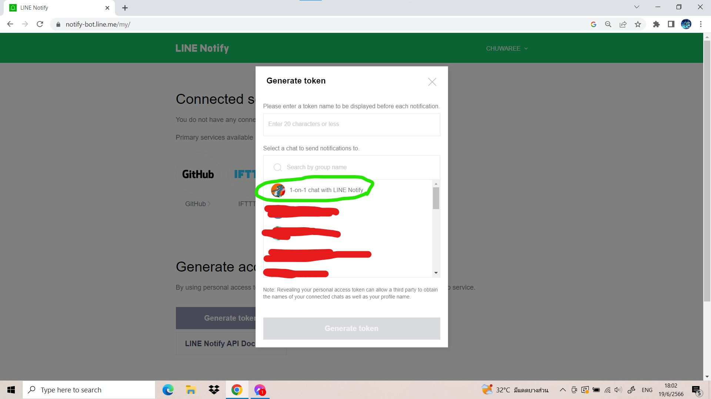
เข้าไปยังเว็บไซต์ Line Notify
เพื่อสร้าง LINE TOKEN เเละเลือกเเชทที่ต้องการ
ให้ LINE NOTIFY เข้าถึง เมื่อทำการกดสร้าง LINE TOKEN เสร็จเเล้วให้คัดลอกเก็บเอาไว้
กดที่นี่เพื่อไปยังเว็บไซต์
1.2 ต่อวงจร
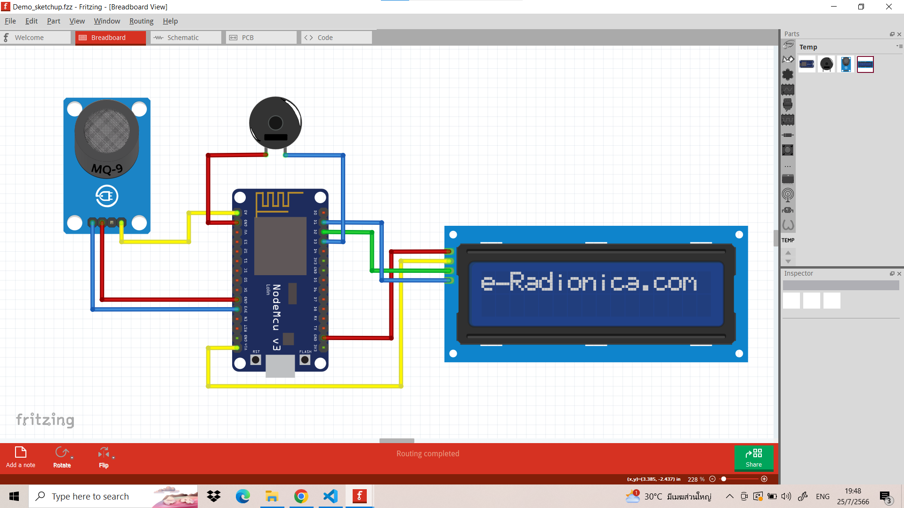
ต่อวงจรโดยนำสาย Jumper เสียบเข้าที่ขาของอุปกรณ์เเต่ละชิ้นตามรูป
* หมายเหตุ การใช้ MQ-9 ในรูปวงจรเเทน MQ-2 เนื่องจากในโปรเเกรมจำลองการต่อวงจรไม่มีโมเดล MQ-2 ให้ ใช้จึงใช้ MQ-9 เเทนซึ่งมีลักษณะการต่อที่เหมือนกัน
* หมายเหตุ จอ LCD I2C ในรูปวงจรมีสีฟ้าเนื่องจากในโปรเเกรมจำลองการต่อวงจรไม่มีโมเดล จอ LCD I2C สีเขียวให้ ใช้จึงใช้ จอ LCD I2C สีฟ้าเเทนซึ่งมีลักษณะการต่อที่เหมือนกัน
* กรณีที่ซื้อจอมาเเล้วต่อวงจรเเล้วไม่เเสดงภาพให้พลิกไปด้านหลังจอจะมีตัวปรับให้หมุนอยู่ให้เอาไขควงหรือปลายไม้บรรทัดเสียบเเล้วหมุนจนกว่าจอจะเเสดงผล
* หมายเหตุ การใช้ MQ-9 ในรูปวงจรเเทน MQ-2 เนื่องจากในโปรเเกรมจำลองการต่อวงจรไม่มีโมเดล MQ-2 ให้ ใช้จึงใช้ MQ-9 เเทนซึ่งมีลักษณะการต่อที่เหมือนกัน
* หมายเหตุ จอ LCD I2C ในรูปวงจรมีสีฟ้าเนื่องจากในโปรเเกรมจำลองการต่อวงจรไม่มีโมเดล จอ LCD I2C สีเขียวให้ ใช้จึงใช้ จอ LCD I2C สีฟ้าเเทนซึ่งมีลักษณะการต่อที่เหมือนกัน
* กรณีที่ซื้อจอมาเเล้วต่อวงจรเเล้วไม่เเสดงภาพให้พลิกไปด้านหลังจอจะมีตัวปรับให้หมุนอยู่ให้เอาไขควงหรือปลายไม้บรรทัดเสียบเเล้วหมุนจนกว่าจอจะเเสดงผล
1.3 ติดตั้งโปรเเกรม Arduino IDE
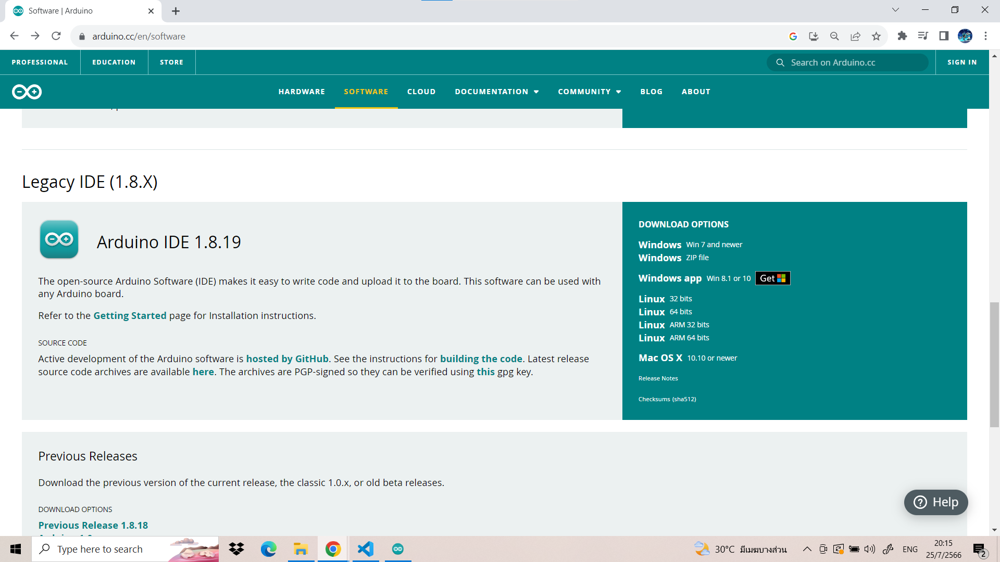
เข้าเว็บไซต์หลักของ Arduino เพื่อติดตั้ง Arduino IDE กดที่นี่เพื่อไปยังเว็บไซต์
เมื่อเลือกเวอร์ชั่นที่ต้องการโหลดได้เเล้วให้กด JUST DOWNLOAD เพื่อโหลดโปรเเกรมฟรี
( เวอร์ชั่นที่ทางเราใช้จะเป็นเวอร์ชั่น 1.8.19 )
1.4 Setup ESP8266
1.4.1 เปิดโปรเเกรม Arduino IDE ไปที่ File > Preferences
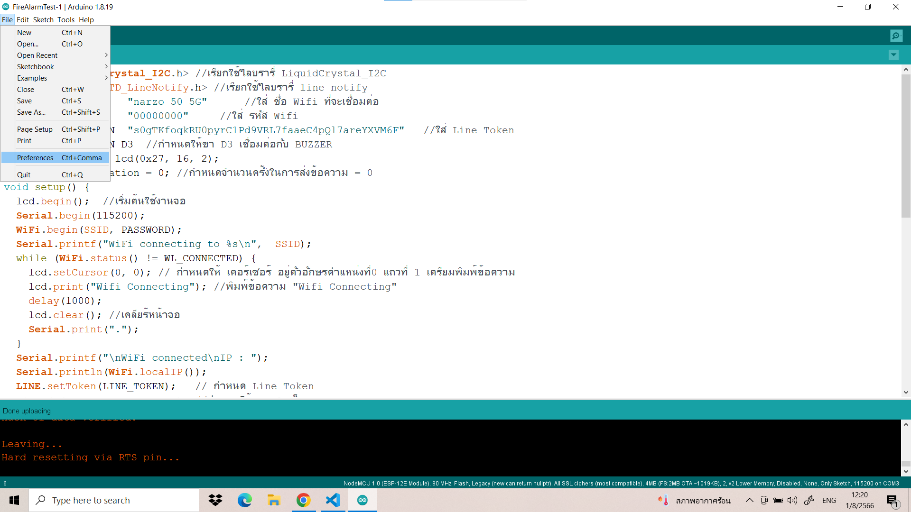
1.4.2 คัดลอกลิงก์ http://arduino.esp8266.com/stable
/package_esp8266com_index.json วางแล้วกด OK
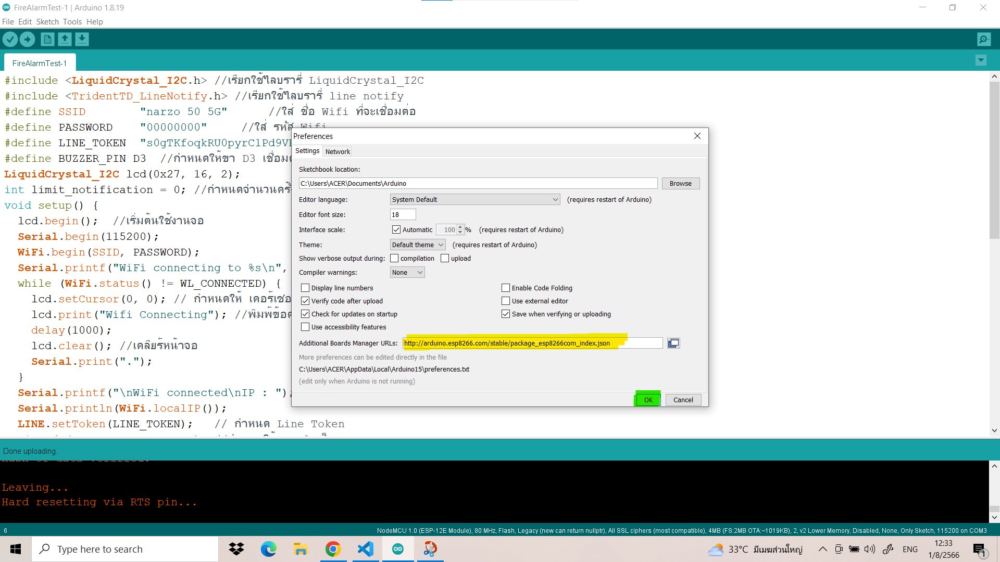
1.4.3 ไปที่ Tools > Board > Boards Manager
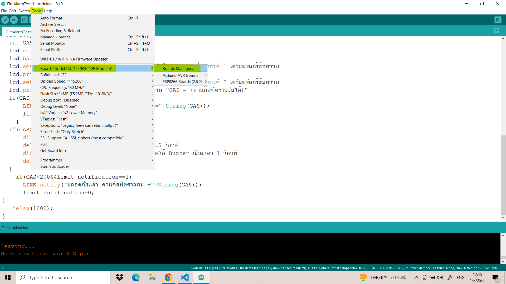
1.4.4 ค้นหา ESP8266 เเละกด Install
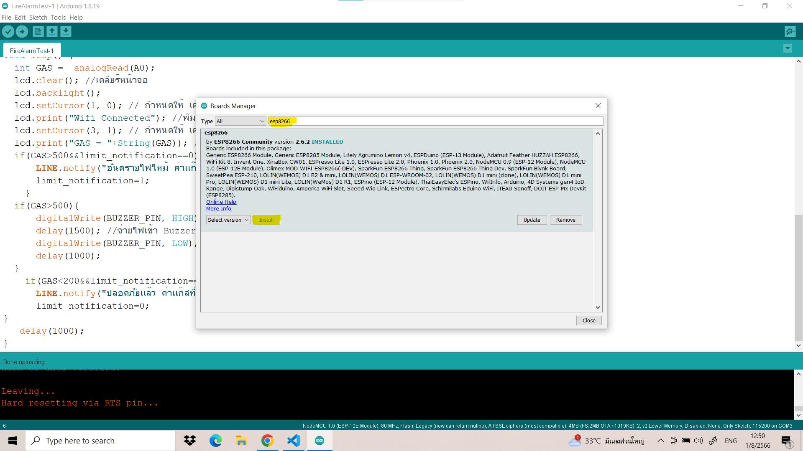
1.4.5 เมื่อเข้าไปเช็คดูตรง Board Manager จะพบว่ามีบอร์ด ESP8266 ให้เลือก NodeMCU 1.0 (ESP-12E Module)
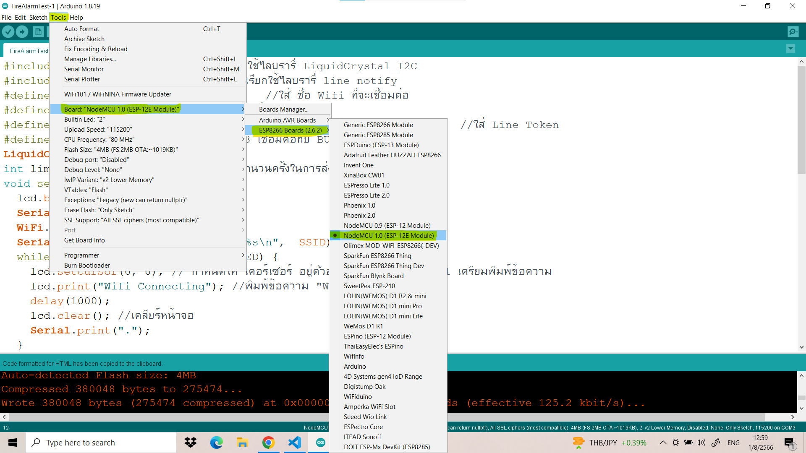
1.4.6 หากต้องการทดสอบว่าบอร์ดที่ซื้อมาใช้ได้หรือไม่ ให้ไปที่ File > Examples > 01.Basics > Blink
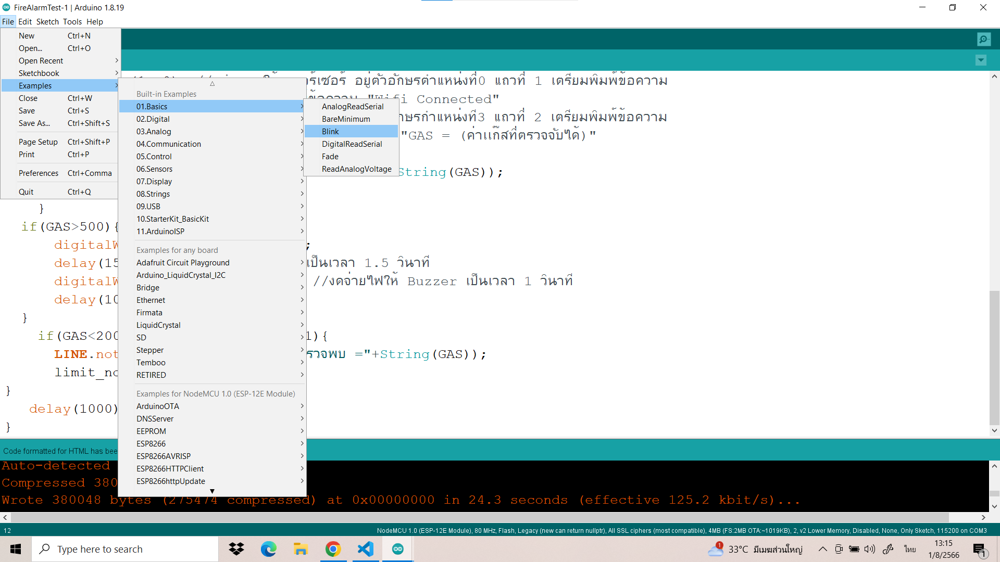
1.4.7 ให้ต่อสาย microUSB เข้าบอร์ดเเละคอมพิวเตอร์ให้เรียบร้อย จากนั้นกดปุ่ม Upload ก่อนอัพโหลดให้ไปดู
Port ว่าใช้ถูกช่องไหม (รูปตัวอย่างจะใช้ช่อง COM3)
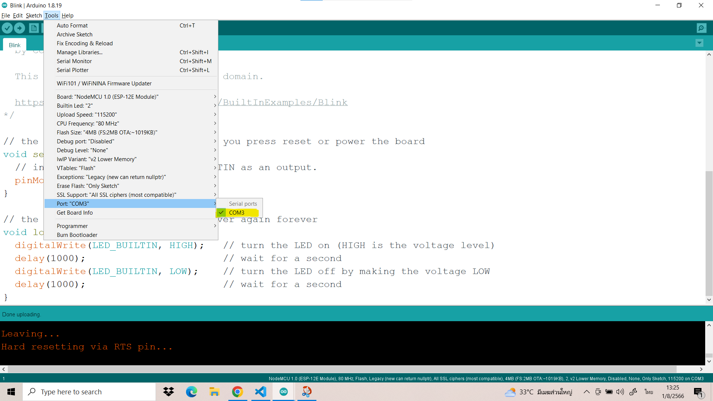
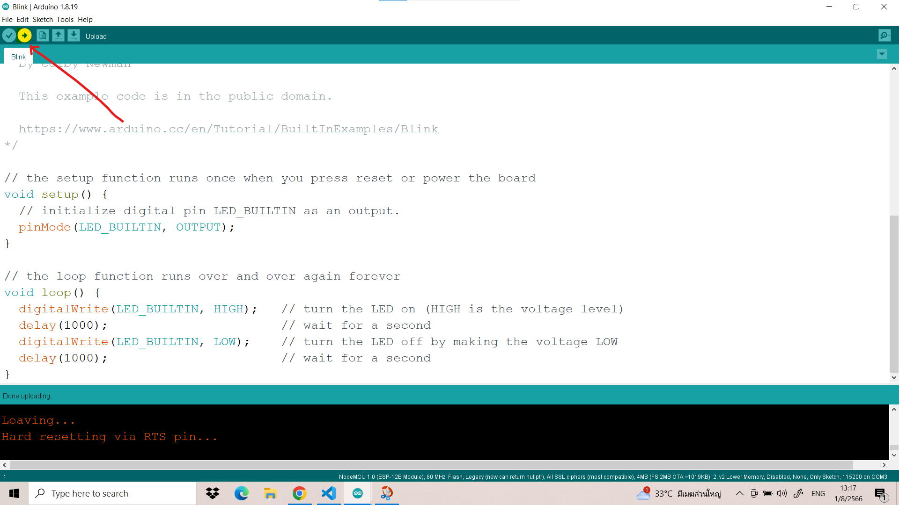
ถ้าหากบอร์ดทำงานปกติให้สังเกตุไฟที่บอร์ดจะกระพริบเรื่อยๆดังรูปตัวอย่าง
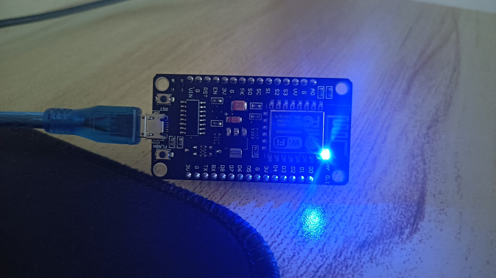
1.5 ติดตั้ง Library ที่จำเป็นต้องใช้
Library หลักๆที่จะใช้มีอยู่ 2 ตัว คือ TridentTD LineNotify เเละ
Liquid Crystal I2C โดย TridentTD LineNotify
จะเป็นไลบรารี่เกี่ยวกับการเเจ้งเตือนผ่าน Line Notify เเละ Liquid Crystal I2C
เป็นไลบรารี่เกี่ยวกับการเเสดงผล
ทางหน้าจอของจอ LCD I2C
วิธีติดตั้ง Library
หลังจากดาวน์โหลด Library เสร็จเเล้วให้คัดลอกโฟลเดอร์
ไปวางในโฟลเดอร์ libraries ของโปรเเกรม Arduino


2. เขียนโปรเเกรม
เขียนโปรเเกรมตามตัวอย่างด้านล่างนี้ได้เลย
#include <LiquidCrystal_I2C.h> //เรียกใช้ไลบรารี่ LiquidCrystal_I2C
#include <TridentTD_LineNotify.h> //เรียกใช้ไลบรารี่ line notify
#define SSID "........" //ใส่ ชื่อ Wifi ที่จะเชื่อมต่อ
#define PASSWORD "........" //ใส่ รหัส Wifi
#define LINE_TOKEN "........" //ใส่ Line Token
#define BUZZER_PIN D3 //กำหนดให้ขา D3 เชื่อมต่อกับ BUZZER
LiquidCrystal_I2C lcd(0x27, 16, 2);
int limit_notification = 0; //กำหนดจำนวนครั้งในการส่งข้อความ = 0
void setup() {
lcd.begin();
Serial.begin(115200);
WiFi.begin(SSID, PASSWORD);
Serial.printf("WiFi connecting to %s\n", SSID);
while (WiFi.status() != WL_CONNECTED) {
lcd.setCursor(0, 0);
lcd.print("Wifi Connecting");
delay(1000);
lcd.clear(); //เคลียร์หน้าจอ
Serial.print(".");
}
Serial.printf("\nWiFi connected\nIP : ");
Serial.println(WiFi.localIP());
LINE.setToken(LINE_TOKEN);
pinMode(BUZZER_PIN, OUTPUT);
}
void loop() {
int GAS = analogRead(A0);
lcd.clear();
lcd.backlight();
lcd.setCursor(1, 0);
lcd.print("Wifi Connected");
lcd.setCursor(3, 1);
lcd.print("GAS = "+String(GAS)); //พิมพ์ข้อความ "GAS = (ค่าเเก๊สที่ตรวจจับได้)"
if(GAS>400&&limit_notification==0){
LINE.notify("อันตรายไฟไหม้ ค่าเเก๊สที่ตรวจพบ ="+String(GAS));
limit_notification=1;
}
if(GAS>400){
digitalWrite(BUZZER_PIN, HIGH);
delay(1500);
digitalWrite(BUZZER_PIN, LOW);
delay(1000);
}
if(GAS<200&&limit_notification==1){
LINE.notify("ปลอดภัยเเล้ว ค่าเเก๊สที่ตรวจพบ ="+String(GAS));
limit_notification=0;
}
delay(1000);
}
เมื่อเขียนโปรเเกรมตามข้างต้นเสร็จเเล้วให้ต่อสาย microUSB เเล้วอัพโหลดโค้ดเพื่อทดสอบการทำงานของโปรเเกรม
( หากโปรเเกรมทำงานปกติเมื่อไม่มีควันลำโพงจะไม่ส่งเสียงดังเเละไม่ส่งการเเจ้งเตือนไปยังไลน์เเละจอ LCD จะเเสดงค่าเเก๊สที่ตรวจพบ )
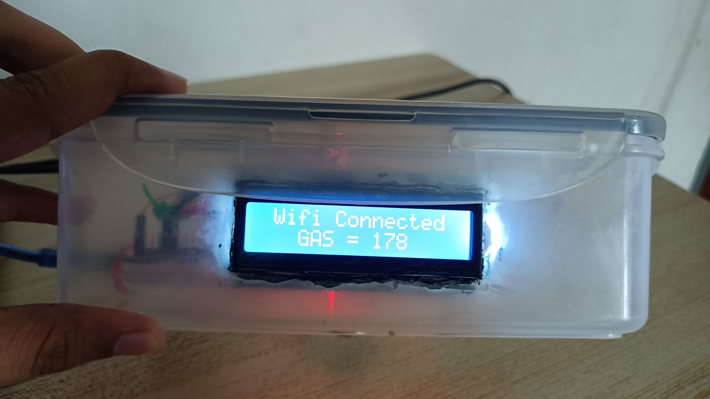
3. นำอุปกรณ์บรรจุลงในกล่อง
เมื่อทดสอบเเล้ว
โปรเเกรมทำงานปกติดังรูปตัวอย่างก็สามารถบรรจุลงกล่องได้เลย ตัวกล่องสามารถดีไซน์ตามเเบบที่ต้องการได้หรืออาจจะนำเอา
ของเหลือใช้มาทำก็ได้ขอเพียงเเค่ใช้งานได้ปกติ
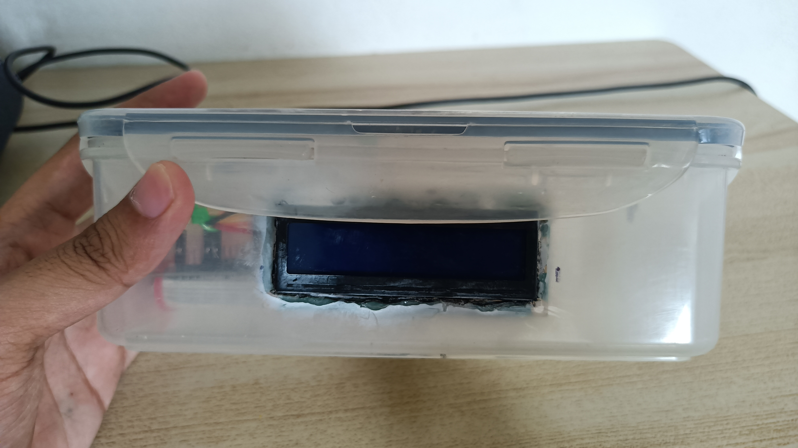